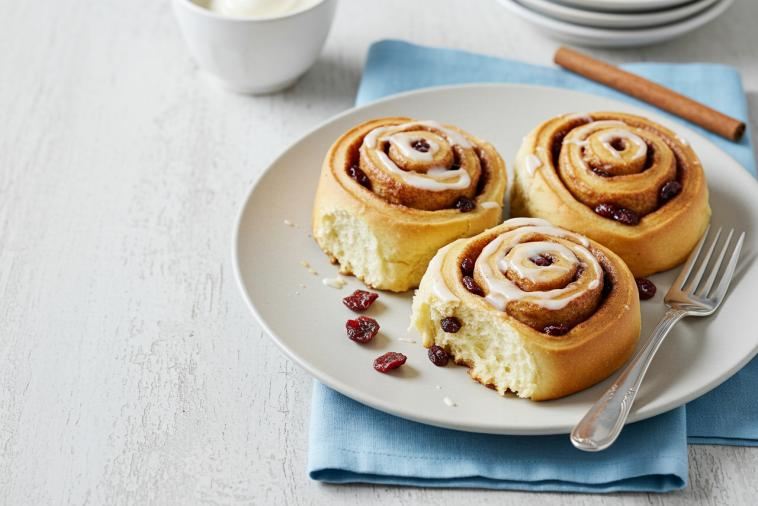
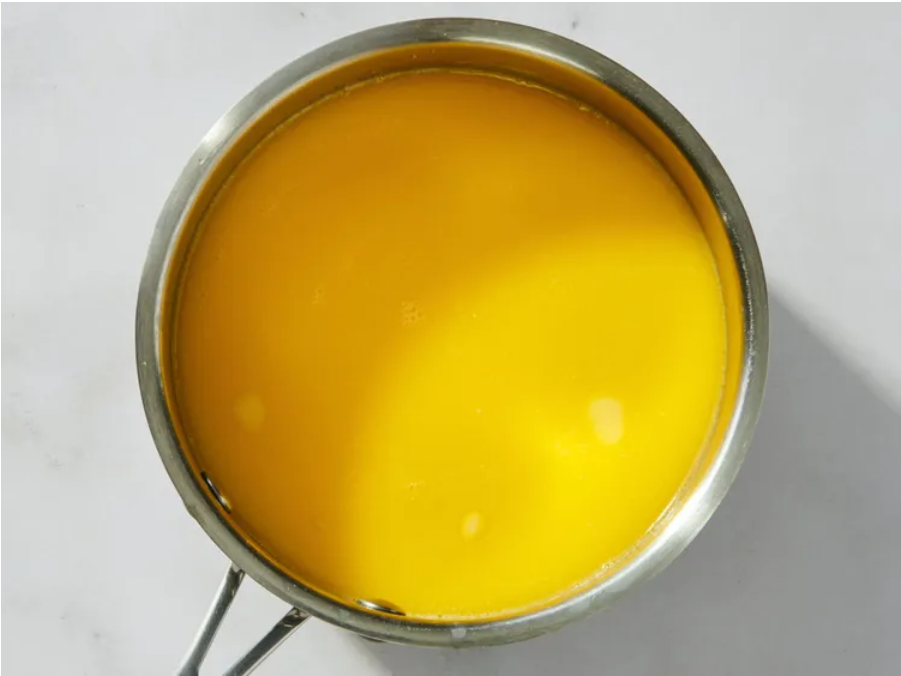
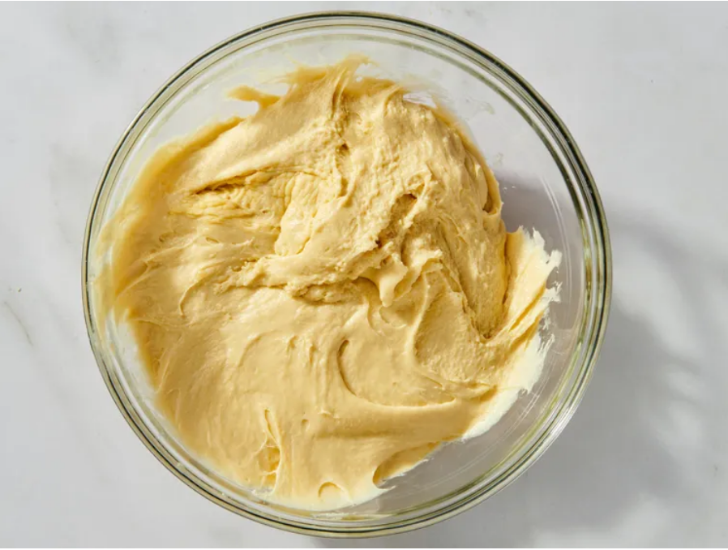
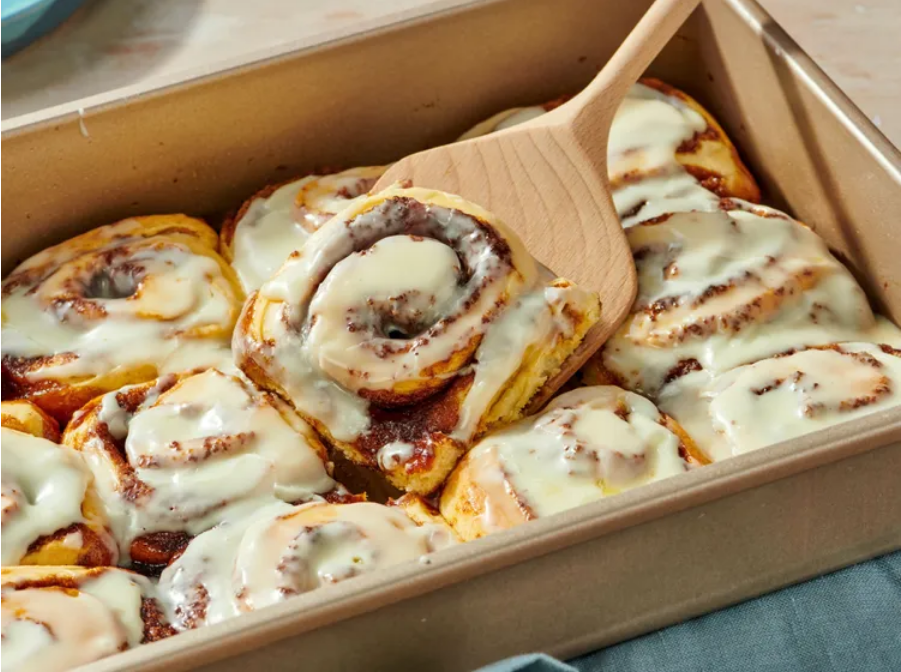

Cinnamon Rolls

Spicy Cinnamon Rolls
Soft, fluffy cinnamon rolls with a warming spicy twist, packed with fragrant cinnamon and sweet brown sugar. Baked until golden and finished with a rich glaze, they’re the perfect combination of sweet, sticky and gently spiced.
Ingredients
- 1 cup milk
- 1/2 cup butter
- 1 cup water
- 1 tablespoon active dry yeast
- 1 cup white sugar
- 1 teaspoon salt
- 2 large eggs
- 6 cups all-purpose flour
- 2 teaspoons ground cinnamon
- 2 cups ground cinnamon
- 2 cups dark brown sugar
- 1/2 cup butter, softened
- 2 cups confectioners' sugar
- 1 (3 ounce) package cream cheese, softened
- 1 tablespoon butter, softened
- 1/2 teaspoon vanilla extract
- 3 tablespoons milk
Directions
- Warm 1 cup of milk in a small saucepan until it just starts to bubble, then remove from heat. Add ½ cup of butter and stir until melted. Add water and let cool until lukewarm.

- Place lukewarm milk mixture, yeast, white sugar, salt, eggs, and 2 cups flour in a large bowl; stir well to combine. Stir in the remaining flour, 1/2 cup at a time, mixing well after each addition.

- Next, use a bit of wizardry and skip from step 2 to step 10 and as if by macgic, and in the interest of saving time in compiling this HTML syntax, your delicious spicy cinnamon rolls are complete!
Serve and enjoy!

Recipe added 22nd September 2026. Original recipes can be found here (opens in a new window).
Return to Homepage.